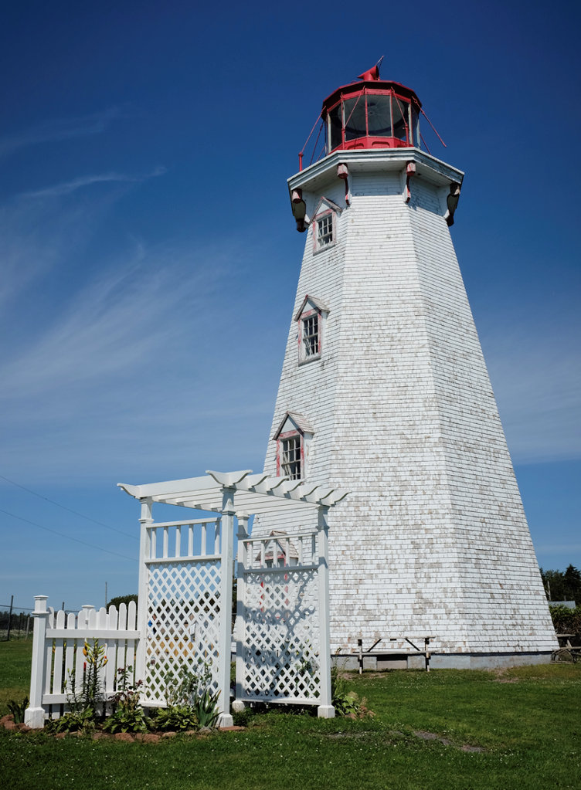

Day 73 - 2 of 3
Taken July 19th, 2014 in Inverness, Canada
Fuji X100s 23mm 1/250 @ f/11.0 ISO 200
Taken July 19th, 2014 in Inverness, Canada Fuji X100s 23mm 1/250 @ f/11.0 ISO 200...
Photo-a-day by Matt Thompson started May 8th, 2014.
Taken July 19th, 2014 in Inverness, Canada
Fuji X100s 23mm 1/250 @ f/11.0 ISO 200
Taken July 19th, 2014 in Inverness, Canada
Fuji X100s 23mm 1/500 @ f/5.6 ISO 200
Taken July 18th, 2014 on Panmure Island, Canada
Fuji X100s 23mm 1/1000 @ f/16.0 ISO 2500
Taken July 18th, 2014 on Panmure Island, Canada
Fuji X100s 23mm 1/500 @ f/11.0 ISO 250

Taken July 18th, 2014 on Panmure Island, Canada
Fuji X100s 23mm 1/250 @ f/11.0 ISO 200

Taken July 18th, 2014 on Panmure Island, Canada
Fuji X100s 23mm 1/500 @ f/11.0 ISO 200
Taken July 17th, 2014 in Charlottetown, Canada
Fuji X100s 23mm 1/100 @ f/4.0 ISO 640
Taken July 17th, 2014 in PEI, Canada
Fuji X100s 23mm 1/30 @ f/11.0 ISO 5000
Taken July 16th, 2014 in Riviere-du-Loup, Canada
Fuji X100s 23mm 1/15 @ f/2.0 ISO 6400
Taken July 16th, 2014 in Quebec, Canada
Fuji X100s 23mm 1/250 @ f/4.0 ISO 2000
Taken July 16th, 2014 on the road in Quebec, Canada
Fuji X100s 23mm 1/1000 @ f/5.6 ISO 1600
Taken July 15, 2014 in Ottawa, Canada
Fuji X100s 23mm 1/250 @ f/5.6 ISO 400